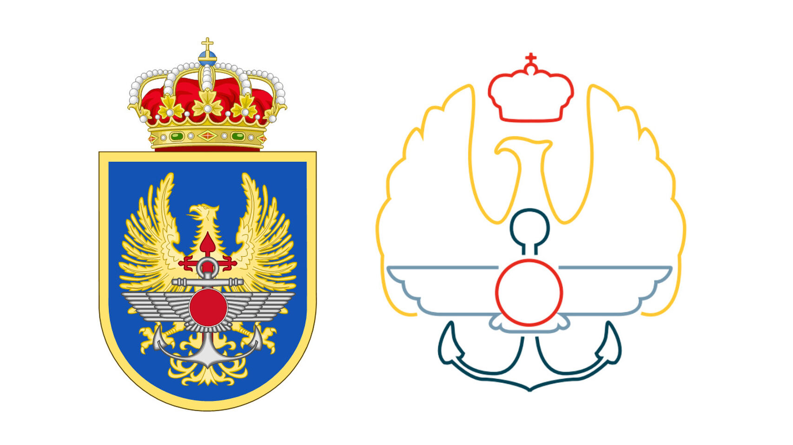

Transcripción de Audio con Whisper
CONFIGURACION
Seleccionar modelo:
Tiny
Base
Small
Medium
Large
Idioma (opcional):
IMPORTACIÓN DE ARCHIVOS DE AUDIO
Subir archivo de audio:
Opciones de Salida:
Sin Añadidos
Incluir Timestamps
Diarización
Traducción al Inglés directa
Transcribir
GRABACIÓN EN TIEMPO REAL DE AUDIO
Iniciar Grabación
Detener Grabación
TRADUCCION
Traducir
Inglés
Ruso
Chino
Francés
Alemán
Italiano
Japonés
Polaco
Árabe
Español
Inglés
Exportar a CSV
Incluir traducción
INICIO
ACERCA DE WHISPER EMACON
Ver Logs
